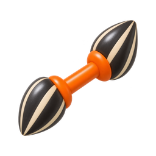
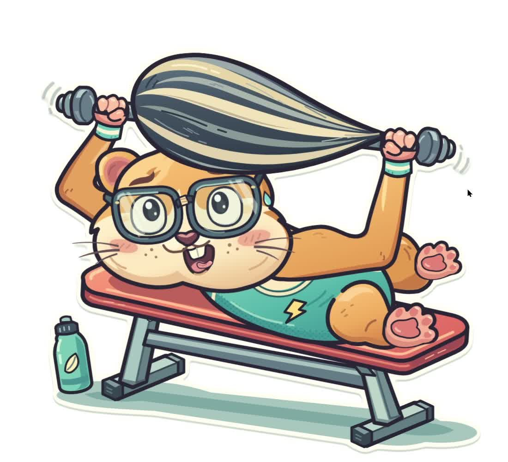

01


Хомяк жмёт семечкуSeed bench press
Хомяк-ботаник в очках жмёт семечку подсолнуха, как штангу: пыжится, щурится и радуется, когда выжал. Один SVG-файл, бесшовный цикл 7,6 с, без скриптов.A nerdy hamster in glasses bench-presses a sunflower seed like a barbell: he strains, squints and beams when the lift goes up. One SVG file, a seamless 7.6-second loop, no scripts.
Минус балл за позу: лежит он на спине или на животе? Решаем в опросе ниже.One point off for the pose: is he lying on his back or on his belly? Vote below.
9/10